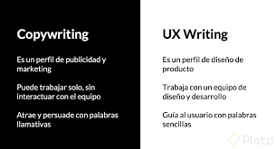
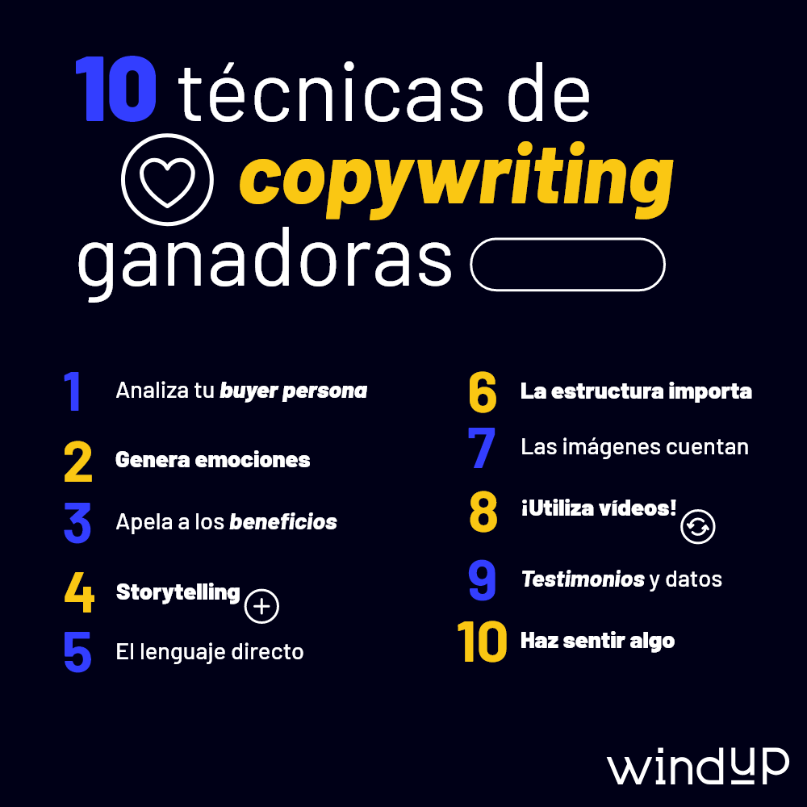
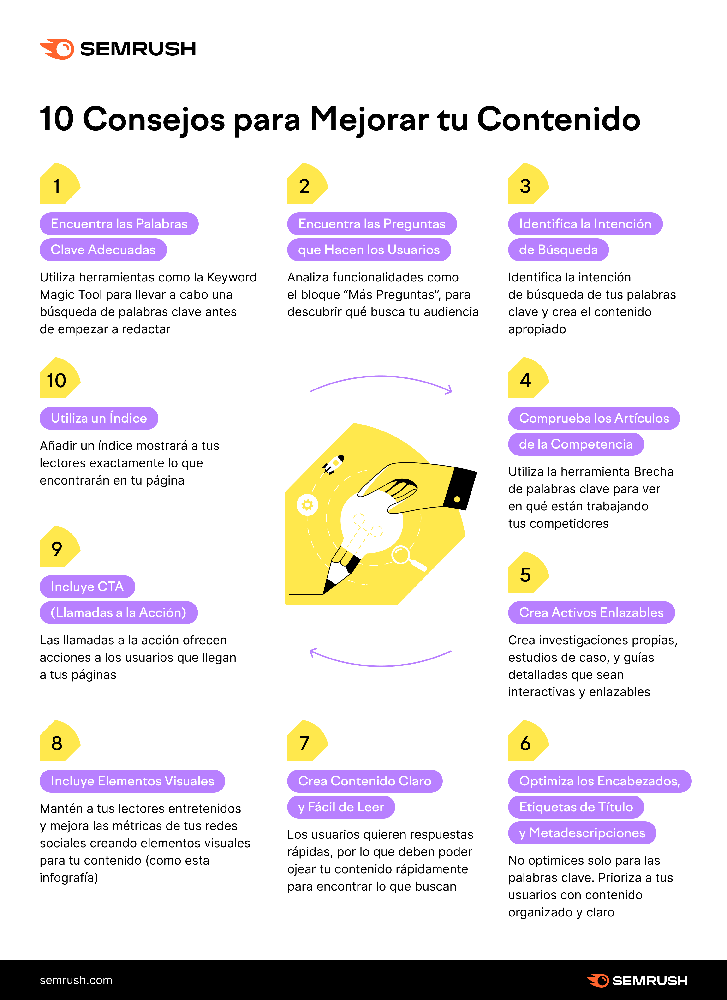

Respuesta a estas preguntas
El copywriting es el proceso de producir textos persuasivos para acciones de Marketing y Ventas, como el contenido de correos electrónicos, sitios web, catálogos, anuncios y cartas comerciales, por ejemplo. El profesional responsable de la elaboración del texto (también llamado “copy”) se conoce como Copywriter.

En el copywriting reina el ingenio y la creatividad para que los mensajes resulten lo más atractivos posible. Por otro lado, en el UX Writing se busca la concisión, la utilidad y la claridad en los mensajes para que un producto digital sea fácil de usar.
si tu marca tiene un tono de voz divertido y juvenil, atraerá a una audiencia que busque contenido creativo y de entretenimiento. Por otro lado, si el tono de voz de la marca es más serio y profesional, atraerá a una audiencia que busque información clara y concisa
Practicar de forma constante : mientras más escribes, mejor lo haces, aunque muchas veces no te des cuenta. Convertir el copywriting en un hábito te ayudará a notar errores comunes, crear tus propios trucos y, en general, a que la redacción te resulte más fácil. Entender al público : como ya sabes, el copywriting trata de motivar una acción, y para eso es necesario investigar qué es lo que mueve a las personas que van a leerlo. Por ejemplo, los intereses de una mujer casada y con tres hijos no serán los mismos que los de una soltera y sin hijos. Comprender esas diferencias es clave para apelar a sus emociones y poder generar resultados. Definir la intención del mensaje : así como es importante saber a quién le escribes, también es clave saber por qué escribes. Define con el mayor detalle posible lo que buscas lograr con tus textos, cómo quieres que se sienta el lector y cómo esperas que te perciba a través de las palabras. Con esto en mente, te resultará más fácil redactar un copy eficaz que responda a tu objetivo. Hacer pruebas A/B : pon a prueba dos versiones de copy para un mismo producto o servicio y evalúa los resultados que obtienes con cada una. ¿Cuál genera más clics? ¿Cuál te reporta más conversiones? Muchas veces nos dejamos llevar por nuestros sesgos, pero no hay que olvidar que es el público objetivo quien tiene la última palabra.
Veamos ahora la narrativa visual para el diseño web. Es un concepto que ganó popularidad en los años noventa como forma gráfica de decirle al usuario, basándose en pruebas e investigaciones de usuarios, lo que necesita oír cuando visita tu sitio. Puede que necesites ayudar a tus usuarios a entender cómo les ayuda tu sitio web, aplicación o producto. La narración visual es una técnica que te ayudará a conseguirlo de la forma más fácil y emocionante posible, ya que las personas se relacionan mejor con las historias. Puede implicar una combinación de imágenes, texto, animación y vídeo, utilizando algunos o todos estos elementos. Lo ideal es que incorpores la narración visual a tus diseños desde el principio, incluso en la fase de prototipo de baja fidelidad.

no hacer estudio de mercado no adaptar el mensaje a la plataforma no usar bien los CTA no apoyarte en imagenes y listas olvidarte de las emociones y conexion que tiene olvidarte del SEO
El copywriting SEO, es el proceso de crear contenido de calidad que sea útil para los usuarios y siga las mejores prácticas SEO. Sin embargo, el término copywriting se refiere originalmente a la redacción de contenidos para publicidad y ventas, destinado a atraer y captar clientes. Aquí tienes 10 consejos de redacción SEO tanto para el copywriting tradicional como para la redacción de contenidos.
En el vasto océano digital, donde innumerables sitios web compiten por la atención, una buena historia puede ser el faro que guíe a los visitantes hacia tu puerto. No es solo cuestión de estética o funcionalidad; el diseño web debe ser el vehículo de una narrativa cautivadora. Como bien dijo el experto en marketing Seth Godin, «El marketing ya no trata de las cosas que haces, sino de las historias que cuentas». Y en el diseño web, esta premisa se convierte en la piedra angular de una presencia online exitosa.
¡Examen sorpresa! Te proponemos comprobar si tu web es apta para dispositivos móviles en la prueba de optimización para móviles de Google. Si has obtenido un claro suspenso, no hay que echarse las manos a la cabeza. Nosotros te damos algunas claves que te harán sacar un sobresaliente en tu diseño responsivo: Piensa primero en la opción móvil. Como se suele decir: “Más vale prevenir que curar”. Si todavía no has comenzado a diseñar tu web, plantea primero la estructura para dispositivos móviles y después adáptala para escritorio. Si ya tienes tu web estructurada para la pantalla del ordenador, no hay que tirar todo tu trabajo por tierra. Tendrás que hacer una análisis más profundo sobre cómo adaptar cada elemento a los diferentes dispositivos móviles. Elige un buen tema. Un tema que funcione bien en tu página es esencial. No nos dejemos llevar por nuestros ojos. Comprueba que todos los elementos se ven correctamente en las diferentes pantallas, lee reseñas de otros usuarios y mide la velocidad del tema antes de comprarlo. Es la mejor forma de ahorrarte un disgusto y, sobre todo, dinero. Aprovecha las opciones responsive de tu maquetador. Muchos maquetadores tienen apartados responsive en sus ajustes. Investiga qué modelo de columnas y adaptaciones quieres para que muestre mejor tus elementos web. Optimiza la velocidad. La velocidad de carga es un factor importantísimo para Google y, a no ser que tu web tenga cronoquinesis como nosotros, hay que emplear tiempo en ella. Hay muchos factores que pueden mejorar la velocidad. Algunos pueden ser: Comprobar si tienes un buen hosting y si la calidad del servidor es correcta. Eliminar widgets y plugins que no necesites o no estés usando. Optimizar las imágenes para que pesen menos. Reconsiderar la necesidad de incrustar un vídeo o un slider que pesen demasiado. Eliminar el contenido de tu web que es inneccesario Mucho ojito con los Sliders. Un slider es ese elemento visual, genial e impactante que nos encanta ver en una gran pantalla. La realidad es que en dispositivos móviles pierde fuerza y ralentiza nuestra página. ¿Es necesario tenerlo? ¿Puedo omitirlo en mi versión móvil? Son preguntas que deberías plantearte por mucho que te duela renunciar a él. Fuente fácil de leer. Sencilla y fácil de adaptar. Un texto en el que tengo que hacer zoom para poder entender algo no invita para nada a la lectura. Ten en cuenta que un tamaño ideal para tu fuente en móvil serían 16 px. Que prime la usabilidad. Tu web tiene que ser fácil e intuitiva para mejorar la experiencia del usuario. Diseña tu página para que la entienda tanto un experto acostumbrado a la pantalla como una persona que acaba de descubrir los audios de WhatsApp. La apariencia importa. Es nuestra carta de presentación. Los usuarios se toman muy pocos segundos en considerar si tu web les ha entrado por los ojos. Créenos que no se cortarán un pelo en ser despiadados y abandonar a la velocidad de la luz tu página. Un diseño atractivo reducirá tu tasa de rebote de forma considerable. Utiliza Media Queries. Los Media Queries pueden aplicar estilos CSS a diferentes componentes de tu web. Son pequeñas órdenes que hacen que tus elementos se muestren de una manera concreta en una medida de pantalla determinada. Por eso, nos interesan mucho las reglas “min-width” y “max-width” relacionados con el ancho que tienen las pantallas de los diferentes dispositivos. Cuida cada detalle. Haz que tus títulos sean legibles, cambia tus links de texto por botones grandes y visibles, inserta correctamente tus vídeos para que se adapten a los márgenes… todos los detalles cuentan para mejorar la experiencia del usuario.

-
- Programas de escritura
- El proceso del copywriting es mucho más complejo de lo que algunos creen, no es solo abrir un documento en blanco y empezar a escribir. Si no tienes nada interesante que compartir o tu mensaje no llega correctamente, solo estarás colocando palabras en un lugar donde no llegarán a ningún destino. Es por eso que hoy quisimos escribir para ti este artículo, donde te ayudaremos a tener las herramientas y conocimientos básicos que necesitas para mejorar tu copywriting o incluso si quieres empezar a dedicarte a ello.
- Word Quizás Word, de Microsoft Office, sea el más popular a nivel mundial y, definitivamente, hay que reconocerle todas las actualizaciones y novedades que han incluído en su interfaz de manera que sea siempre útil. Si no tienes el programa directamente en tu computador puedes usar la versión online o la versión de Google Drive totalmente gratis solo con tener una cuenta Gmail.
- Evernote Evernote es otra aplicación sumamente intuitiva y amigable al momento de escribir, más novedosa quizás que Microsoft Word y que además te permite compartir también tus notas, como archivo, enlace o el formato que necesites.
- TalkTyper Por último, TalkTyper que, haciéndole honor a su nombre, te permite transcribir tus ideas mediante el dictado de voz, porque sí, también es válido usar ese tipo de recursos en un proceso de copywriting. Si tenemos las herramientas, hay que usarlas. Sea cual sea el programa que escojas, igual es importante que al finalizar leas nuevamente tus ideas y añadas los toques finales o hagas las correcciones correspondientes.
- Writing Esta aplicación no solo es un espacio para escribir, sino que va nutriendo tu vena de escritor, recibes artículos diarios y tienes cierto tiempo para leerlos y empezar a agilizar el cerebro en estos procesos. A medida que vayas avanzando, recibirás tareas que sirvan de práctica en tu proceso de creación de contenidos.
- Generador de ideas de HubSpot Tal como lo describe su título, acá podrás generar ideas para escribir partiendo de un tópico cualquiera. Tienes recursos tanto gratuitos como pagos. Con este generador de ideas, ya no tendrás que pasar horas pensando y buscando información sobre qué quieres o debes escribir, en solo un par de clics tendrás lo que necesitas.
- iA Writer Aunque es una aplicación paga, está disponible para todos los sistemas operativos y tiene unas versiones de prueba que te permiten saber si es lo que estás buscando o si te funciona. Te permite enfocarte en párrafos específicos, hacer uso de colores, resaltadores, negrilla, y todos los recursos que consideres necesarios para una escritura efectiva.
En este punto, queremos ir desde lo más tecnológico e innovador hasta lo más básico, porque en el proceso de escritura todo aporta y te ayuda a desarrollar diferentes habilidades.